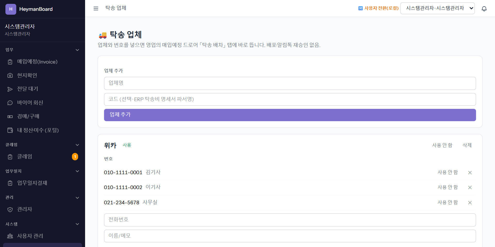
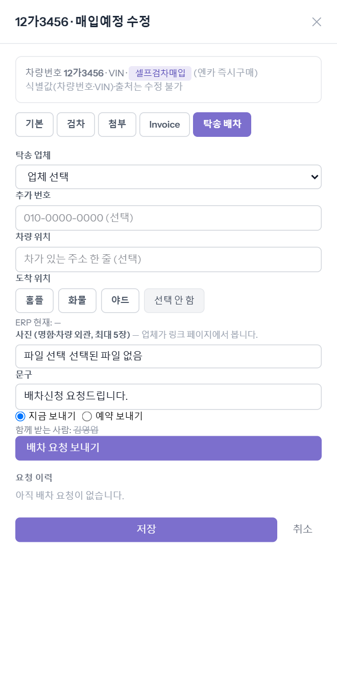
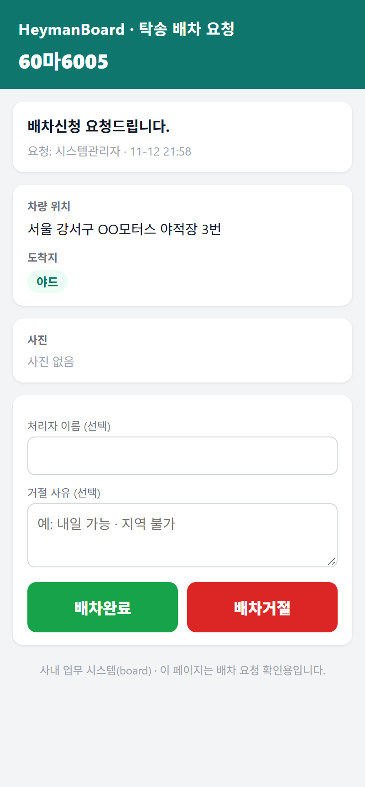
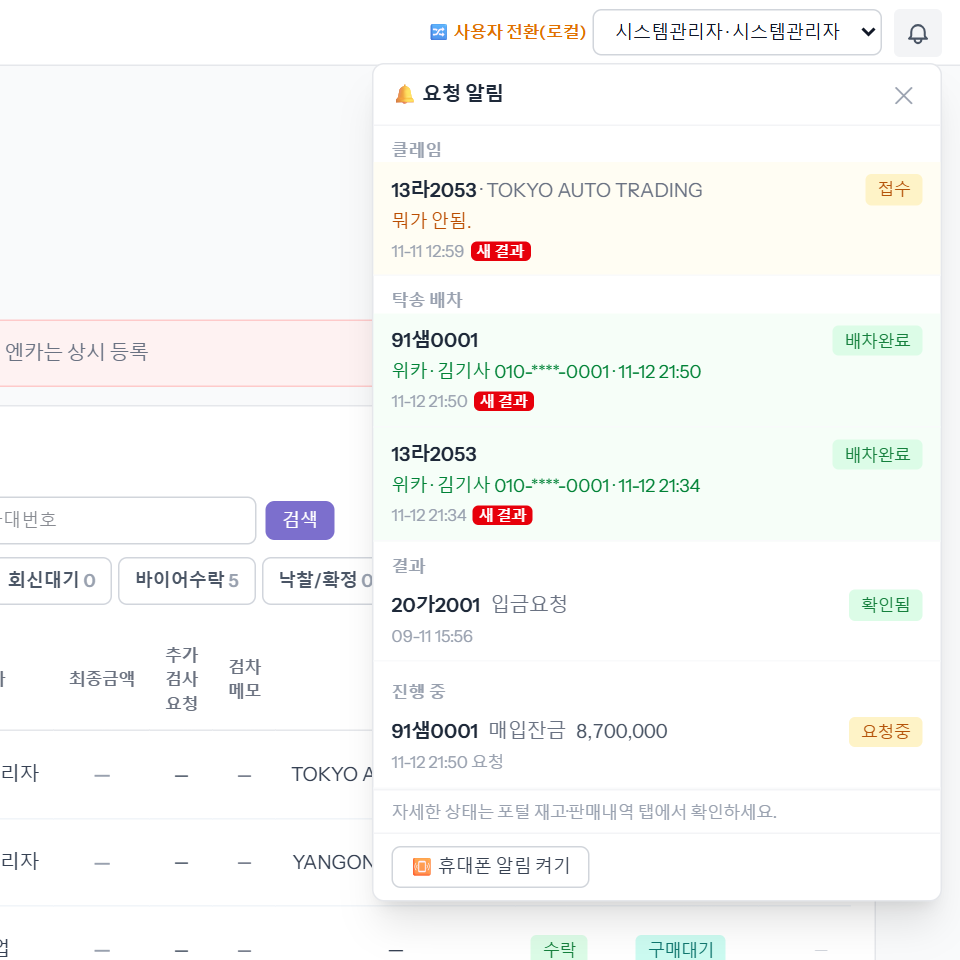
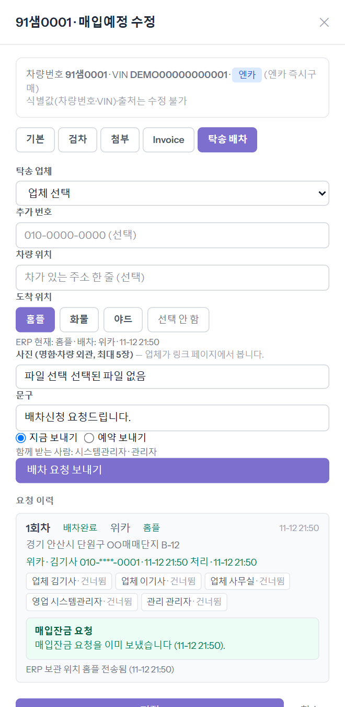

board(8003) ↔ 로컬 ERP(8001, car-erp dev c1301619) 연동 상태에서 매물 91샘0001(ERP 차량 273)로 씬을 끝까지 돌렸습니다.
알림톡은 로컬에 BizM 발급 코드가 없어 실발송은 되지 않았고(발송 기록에 「건너뜀」으로 남음), 아래 카톡 말풍선은 BizM 에 승인 요청한 본문 그대로를 실제 값으로 치환해 「운영에서 이렇게 간다」를 보여주는 것입니다.
코드의 본문과 제출한 엑셀 본문이 바이트 단위로 같음을 확인했습니다(요청 209자·결과 210자).
업체와 번호 n개를 넣으면 영업의 드로어 탭에 즉시 뜹니다. 배포·알림톡 재승인 없음. 번호는 암호화 저장, 감사·로그엔 ***.

업체 위카 · 차량 위치 「경기 안산시 단원구 OO매매단지 B-12」 · 도착 위치 홈플 · 사진(명함·외관 ≤5) · 「배차신청 요청드립니다.」 · 지금 보내기(또는 예약 시각).
함께 받는 사람 = 등록 영업(시스템관리자) + 그 영업의 관리(관리자). 도착 위치 버튼은 ERP 가 준 회사별 목록(홈플·화물·야드)로 그려지고, ERP 에 이미 값이 있으면 「ERP 현재: …」로 미리 찍힌 뒤 바꿀 때 확인창.

transport_request_create 「1회차 · 위카 · 사진 0 · 발송 11-12 21:50 · 도착 홈플」 → transport_request_sent 「수신 5명 (발송 0 · 실패 0 · 건너뜀 5)」• 버튼 = 수신자마다 다른 서명 링크(5일 만료) https://board.heysellcar.com/a/transport/2?r=<수신자>&expires=…&signature=… — 누가 눌렀는지 이 링크로 안다.
• #{요청회사} = 인스턴스 회사명(헤이맨/싼카). #{주소} 가 비면 「페이지에서 확인」.
• 사진은 알림톡에 못 실린다(BizM 제약) → 버튼 너머 페이지에서 본다.
• 영업·관리도 같은 알림톡을 받지만 그 링크는 보기 전용.
@site_condition, 요청회사 「싼카」, 링크 board.heymancar.com 로 간다(인스턴스별 설정).ERP 재고 탭의 「보관 위치」가 홈플로 찍히고 메모에 배차 요청이 남습니다(ERP 감사 행도 생김). 배차완료 때 메모가 「배차: 위카 · 김기사 010-****-0001 · 일시」로 갱신됩니다.
ERP 가 아직 이 경로를 안 열었으면(운영 배포 전) 탭에 「ERP 연동 대기」로 표시되고 요청 흐름은 그대로 진행됩니다. 실패는 행에 남고 [다시 보내기].
transport_location_sent 「OK · 홈플 · 배차: 위카 · 11-12 21:50」 · 전송 표(/audit): stock_location 200
transport_request_decided 「accepted · 위카 · 김기사 010-****-0001 · 11-12 21:50」(기사 IP 포함).
?edit=). 폰 푸시(웹푸시)도 같은 내용·같은 링크.
transport_balance_request 「OK · 8,700,000원 · 배차: … · sales@car-erp.test」. 요청은 등록 영업의 ERP 명의로 나가고, 누를 수 있는 사람 = 등록 영업·공유받은 관리·시스템관리자(업무관리자·최고관리자는 조회 전용).고정문은 이미 승인된 erp_board_request 그대로이고, 배차 줄은 변수 #{요청내역} 안에 들어가므로 BizM 재승인 없음. 로컬 ERP 는 알림톡 미설정이라 발송은 「건너뜀」, 본문은 ERP 조립 규칙(BoardRequestController 255~262행)대로 예상한 것입니다.
mockups/transport-flow/).